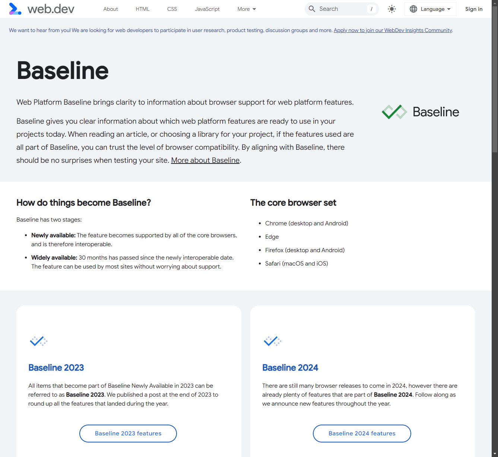
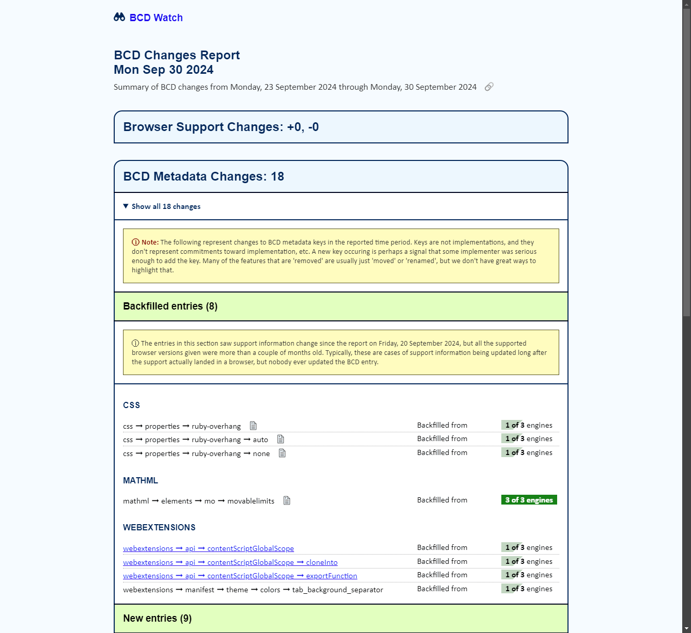
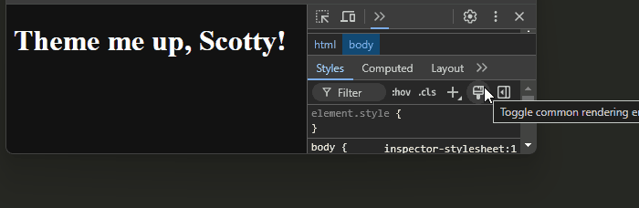

Future Web
Craig Buckler
craigbuckler.com
TechExeter Conference
1 November 2024
print-friendly view
What's new in browser land?
- a few additional HTML5 elements and attributes
- some new JavaScript methods and browser APIs
- a ton of CSS properties and techniques
craigbuckler.com/techexeter24
Craig Buckler
freelance full stack web developer
web.dev/baseline

bcd-watch.igalia.com

Documentation
you won't find this
stuff in AI tools!
When do you use new features?
- today - screw old browsers and their luddite users!
- today - I use Progressive Enhancement
- soon - when browser support reaches X%
- never - I have to support IE3 and hate my life
IT DEPENDS
text-wrap property
Title wrapping causes orphan words
This is a long paragraph. Ideally, we want to avoid orphan words shown at the end of the text.
/* default */
h2, p {
text-wrap: wrap;
}
Title wrapping causes orphan words
This is a long paragraph. Ideally, we want to avoid orphan words shown at the end of the text.
h2 {
text-wrap: balance;
}
p {
text-wrap:pretty;
}
SAFE
inert attribute
<div inert>
<button>You can't click me!</button>
</div>
[inert] {
opacity: 50%;
}
safe but … IT DEPENDS!
SAFE
inert attribute
<div inert>
<button>You can't click me!</button>
</div>
[inert] {
opacity: 50%;
pointer-events: none;
}
document.addEventListener('click', e => {
if (e.target.closest('[inert]')) {
e.preventDefault();
e.stopPropagation();
}
}, true);
SAFE
Vertically aligning content
align-content: center; available in flexbox and grid…
…now align-content: center; now works in any block!
align-content support
block layout support in all main browsers since March 2024
- little point updating existing layouts
- could consider for new projects
- can't test
@supports (align-content: center)
- old browsers will align elements to the top
CAUTION
Native CSS nesting
.parent {
p { ... }
.child { ... }
&.special { ... }
.before + & { ... }
}
BEWARE
Native CSS nesting
You can test for CSS support…
@supports selector(&) {
/* nested CSS */
main {
h1 { color: #333; }
}
}
@supports not (selector(&)) {
/* non-nested CSS */
main h1 { color: #333; }
}
…but why would you?!
BEWARE
CSS logical properties
| (old) physical property | (new) logical property |
|---|
margin-top | margin-block-start |
margin-bottom | margin-block-end |
margin-left | margin-inline-start |
margin-right | margin-inline-end |
top | inset-block-start |
bottom | inset-block-end |
left | inset-inline-start |
right | inset-inline-end |
SAFE
SAFE
Animation easing
animation: 2s cubic-bezier(0.7, 1.9, 0.6, 0.4) 0s infinite normal bounce;
linear() easing function
animation-timing-function:
linear(0, 0.06, 0.25, 0.56, 1, 0.81, 0.75, 0.81, 1, 0.94, 1 91%, 0.98, 1);
linear-easing-generator.netlify.app
SAFE
Scroll-driven animations
Scroll-driven animations
JavaScript-based animations are tricky
- Intersection Observer API good for entry and exit…
- …but not for progress
- window
scroll event handlers
scrollTop and clientHeight calculations- element
offsetTop, offsetLeft, getBoundingClientRect() calculations
- …all cause a browser reflow
- Intersection Observer
boundingClientRect property is better
- calculations still use main processing thread
janky performance!
Scroll-driven animations
SAFE
Progress bar animation
<div id="progress"></div>
#progress {
position: fixed; inset: 0; height: 1em;
background-color: #c00;
transform-origin: 0;
animation: auto linear scaleX both;
animation-timeline: scroll();
}
@keyframes scaleX {
0% { transform: scaleX(0); }
100% { transform: scaleX(1); }
}
SAFE
Image animations
<img src="images/puffin.jpg" width="900" height="600" alt="puffin" />
img {
width: 100%; height: auto;
animation: auto linear reveal both;
animation-timeline: view();
animation-range: entry 5% cover 50%;
}
@keyframes reveal {
0% { opacity: 0; clip-path: inset(0% 50% 0% 50%); }
100% { opacity: 1; clip-path: inset(0% 0% 0% 0%); }
}
SAFE
Scroll-driven animations
SAFE
SAFE
Multi-page view transitions
@view-transition { navigation: auto; }
::view-transition-old(root) {
animation: 2s pagetransition-out 0s linear;
}
::view-transition-new(root) {
animation: 2s pagetransition-in 0s linear;
}
@keyframes pagetransition-out {
from { opacity: 1; }
to { opacity: 0; }
}
@keyframes pagetransition-in {
from { opacity: 0; }
to { opacity: 1; }
}
SAFE
Popovers
SAFE
Popovers
<p popover id="tooltip">a tooltip</p>
<button popovertarget="tooltip">click me</button>
const tooltip = document.getElementById('tooltip');
tooltip.showPopover();
tooltip.hidePopover();
SAFE
HTML <dialog>
SAFE
<dialog> code
<dialog id="dialog">
<p>I'm an annoying modal popup dialog!</p>
<form method="dialog">
<button>Close</button>
</form>
</dialog>
<button id="open-button">open dialog</button>
document.getElementById('open-button').addEventListener('click', () =>
document.getElementById('dialog').showModal()
);
SAFE
Opened <dialog>
<dialog id="dialog" open>
<p>I'm an annoying modal popup dialog!</p>
<form method="dialog">
<button>Close</button>
</form>
::backdrop
</dialog>
SAFE
<dialog> styling
html { scrollbar-gutter: stable; }
dialog { /* ... */ }
dialog::backdrop {
background-color: rgba(0, 0, 0, 0.5);
backdrop-filter: blur(6px);
}
html:has(dialog[open]) {
overflow: hidden;
}
SAFE
HTML <dialog> styling
SAFE
Entry and exit animations
dialog {
transition: all 0.6s ease-out;
transition-behavior: allow-discrete;
&[open] {
opacity: 1;
transform: none;
@starting-style {
display: block;
opacity: 0;
transform:
scale(0.8)
translateY(-70vh)
rotateX(90deg)
perspective(500px);
}
}
&:not([open]) {
display: none;
opacity: 0;
transform:
scale(0.8)
translateX(100vw)
skewX(-30deg);
}
}
SAFE
Entry and exit animations
SAFE
<details>/<summary> accordion
<details>
<summary>What is HTML?</summary>
<p>Hypertext Markup Language</p>
<p>Used for web page content.</p>
</details>
SAFE
Exclusive accordion
<details name="faq">
<summary>What is HTML?</summary>
<p>Hypertext Markup Language</p>
</details>
<details name="faq">
<summary>What is CSS?</summary>
<p>Cascading Style Sheets</p>
</details>
SAFE
Animate to auto
:root {
interpolate-size: allow-keywords;
}
details {
height: 1.6em;
overflow-y: clip;
transition: all 0.5s ease-out;
}
details[open] {
height: auto;
}
SAFE
Animate to auto
details {
height: 1.6em;
overflow-y: clip;
transition: all 0.5s ease-out;
}
details[open] {
height: auto;
height: calc-size(auto, size);
height: calc-size(auto,
calc(size + 2em)
);
}
CAUTION
Light and dark themes

How many CSS properties does this require?
- 4 properties
- 1 property
- no properties
- get on with it!
Answer: no CSS!
<!DOCTYPE html>
<html lang="en">
<head>
<meta charset="UTF-8">
<title>theme</title>
<meta name="color-scheme" content="dark light">
<body>
<h1>Theme me up, Scotty!</h1>
</body>
</html>
html {
color-scheme: dark light;
}
SAFE
<system-color> values
/*
AccentColor AccentColorText ActiveText ButtonBorder
ButtonFace ButtonText Canvas CanvasText Field
FieldText GrayText Highlight HighlightText LinkText
Mark MarkText SelectedItem SelectedItemText VisitedText
*/
h2 {
color: ButtonText;
}
SAFE
Theme CSS
html, html[data-theme="light"] {
--color-fore: black;
--color-back: white;
color-scheme: light;
}
@media (prefers-color-scheme: dark) {
html {
--color-fore: white;
--color-back: black;
color-scheme: dark;
}
}
html[data-theme="dark"] {
--color-fore: white;
--color-back: black;
color-scheme: dark;
}
body {
color: var(--color-fore);
background-color: var(--color-back);
}
SAFE
Theme CSS
@media (prefers-color-scheme: dark) {
html {
--color-fore: white;
--color-back: black;
color-scheme: dark;
}
}
html[data-theme="dark"] {
--color-fore: white;
--color-back: black;
color-scheme: dark;
}
It's not DRY!
it's WET
CSS Container Style Queries
html, html[data-theme="light"] {
--theme: light;
}
@media (prefers-color-scheme: dark) {
html {
--theme: dark;
}
}
html[data-theme="dark"] {
--theme: dark;
}
BEWARE
CSS Container Style Queries
body {
color: black;
background-color: white;
color-scheme: light;
}
@container style(--theme: dark) {
body {
color: white;
background-color: black;
color-scheme: dark;
}
}
BEWARE
light-dark() function
html, html[data-theme="light"] {
color-scheme: light;
}
@media (prefers-color-scheme: dark) {
html {
color-scheme: dark;
}
}
html[data-theme="dark"] {
color-scheme: dark;
}
CAUTION
light-dark() function
body {
--color-fore1: light-dark(#003, #ccc);
--color-fore2: light-dark(#336, #ccf);
--color-back1: light-dark(#ccc, #003);
color: var(--color-fore1);
background-color: var(--color-back1);
}
h1 {
color: var(--color-fore2);
}
CAUTION
CAUTION
color-mix() function
color: color-mix(
<interpolation>,
<color1> <color1%>,
<color2> <color2%>
);
background-color: color-mix(in oklab, black 25%, white 75%);
background-color: color-mix(in oklab, black 50%, white 50%);
background-color: color-mix(in oklab, black 75%, white 25%);
Mix any colour with a system colour:
background-color: color-mix(in oklab, hsl(200 100% 50%) 50%, Canvas 50%);
SAFE
Theme color-scheme
html, html[data-theme="light"] {
color-scheme: light;
}
@media (prefers-color-scheme: dark) {
html {
color-scheme: dark;
}
}
html[data-theme="dark"] {
color-scheme: dark;
}
CAUTION
Theme base colour and mix
:root {
--base-hue: 180;
--base-color: hsl(var(--base-hue) 100% 50%);
--base-mix: 30%;
--system-mix: calc(100% - var(--base-mix));
accent-color: var(--base-color);
}
body {
--color-canvas: color-mix(
in oklab,
var(--base-color) var(--base-mix),
Canvas var(--system-mix)
);
}
CAUTION
CAUTION
Quick stuff: styling <select>
<select name="job">
<option>digital prophet</option>
<option>brand warrior</option>
<option>inspiration Jedi</option>
</select>
<selectmenu name="job">
<option>digital prophet</option>
<option>brand warrior</option>
<option>inspiration Jedi</option>
</selectmenu>
BEWARE
Quick stuff: styling <select>
select, ::picker(select) {
appearance: base-select;
}
<hr />
<option value="annoying">
<img src="useless.svg" />
<span>inspiration Jedi</span>
</option>
BEWARE
Quick stuff: CSS maths functions
sin(), cos(),
acos(), asin(),
abs(),
tan(), atan(), atan2(),
log(), pow(), sqrt(), hypot(), exp(),
round(), mod(), rem()
CAUTION
Quick stuff: CSS environment
env(safe-area-inset-top | bottom | left | right);
env(titlebar-area-x | y);
env(titlebar-area-width | height);
env(keyboard-inset-top | bottom | left | right);
env(keyboard-inset-width | height);
footer {
position: fixed;
inset: 0;
inset-block-start: auto;
padding-block-end: env(safe-area-inset-bottom, 20px);
}
SAFE
Quick stuff: attr() function
<div data-width="100"></div>
<style>
div {
width: attr(data-width px);
}
</style>
BEWARE
Quick stuff: CSS random functions
width: random(100px, 30em);
font-family: random-item(Arial, Times, "Comic Sans");
background: first-valid( 100px, invalidColor, #fff );
BEWARE
Quick stuff: CSS sibling functions
sibling-count(); /* number of siblings */
sibling-index(); /* current sibling */
menu li {
position: absolute;
inset-block-start:
calc(sin( sibling-index() / sibling-count() * pi * 2) * 200px);
inset-inline-start:
calc(cos( sibling-index() / sibling-count() * pi * 2) * 200px);
}
BEWARE
Thanks for coming!
stuff we don't have time for…
- CSS anchor positioning
- CSS resizable form
field-sizing: content
- CSS
font-size-adjust
- CSS
margin-trim
- CSS
contrast-color
- CSS
hanging-punctuation
- CSS
@property definitions
- CSS relative colors
- CSS masonry layout
- CSS new viewport unit dimensions
- simpler media query syntax:
@media (500px < width < 800px)
- Web Component declarative shadow DOM
- plaintext-only
contenteditable
- JavaScript scroll snap events
- JavaScript import maps and JSON modules
- JavaScript
scheduler.yield()
- JavaScript
Promise.try
- JavaScript
Math.sumPrecise()
- JavaScript picture-in-picture API
- PWA badging API
- PWA file type handler registration
- PWA window controls overlay
DEPENDS!